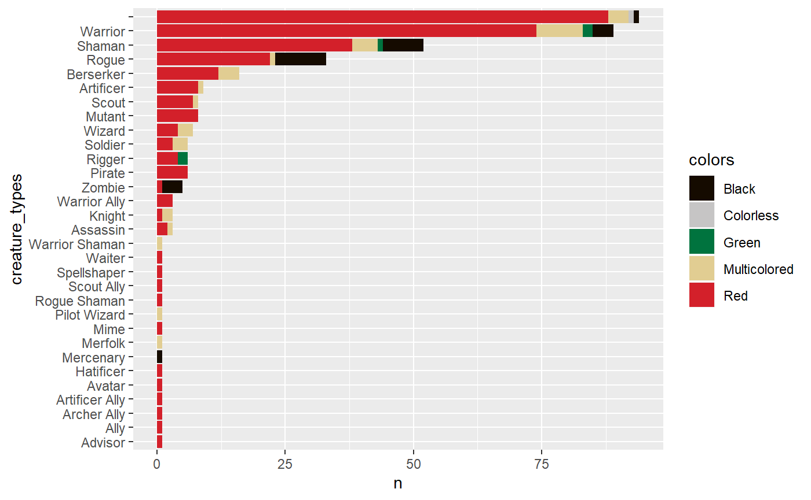
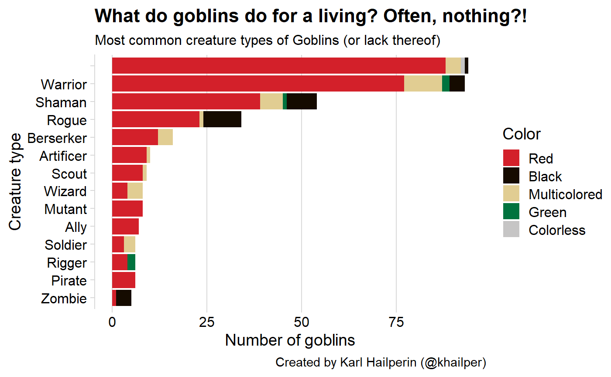

library(tidyverse)
#> -- Attaching packages ----------------------------------------------------------- tidyverse 1.2.1 --
#> v ggplot2 3.2.0 v purrr 0.3.2
#> v tibble 2.1.3 v dplyr 0.8.2
#> v tidyr 0.8.3 v stringr 1.4.0
#> v readr 1.3.1 v forcats 0.4.0
#> -- Conflicts -------------------------------------------------------------- tidyverse_conflicts() --
#> x dplyr::filter() masks stats::filter()
#> x dplyr::lag() masks stats::lag()
library(cowplot)
#>
#> *******************************************************
#> Note: cowplot does not change the default ggplot2 theme
#> anymore. To recover the previous behavior, execute:
#> theme_set(theme_cowplot())
#> *******************************************************
library(scryr)
library(mtggplot)
# get all creatures of type Goblin
goblins <- scry_cards("t:creature t:goblin") %>%
mutate(creature_types = map(type_line, extract_subtypes) %>%
unlist() %>%
# we want to know what their non-Goblin types are
str_remove("Goblin") %>%
str_trim()
)goblins_count_type <- goblins %>%
mutate(colors = map_chr(colors, relabel_mtg_color)) %>%
count(creature_types, colors)
head(goblins_count_type)
#> # A tibble: 6 x 3
#> creature_types colors n
#> <chr> <chr> <int>
#> 1 "" Black 1
#> 2 "" Colorless 1
#> 3 "" Multicolored 4
#> 4 "" Red 88
#> 5 Advisor Red 1
#> 6 Ally Red 1We want to sort by total goblins across colors (for display plotting)
goblins_count_type <- goblins_count_type %>%
group_by(creature_types) %>%
mutate(total_of_type = sum(n)) %>%
ungroup() %>%
# -total_of_type so head(works)
mutate(creature_types = fct_reorder(creature_types, total_of_type)) %>%
arrange(-total_of_type)
head(goblins_count_type)
#> # A tibble: 6 x 4
#> creature_types colors n total_of_type
#> <fct> <chr> <int> <int>
#> 1 "" Black 1 94
#> 2 "" Colorless 1 94
#> 3 "" Multicolored 4 94
#> 4 "" Red 88 94
#> 5 Warrior Black 4 89
#> 6 Warrior Green 2 89Interesting. Most goblins are just “Goblin”. Let’s vizualize.
ggplot(goblins_count_type, aes(creature_types, n, fill = colors)) +
geom_col() +
coord_flip() +
scale_fill_manual(values = mtg_cols())
The Goblins with multiple types might be worth accounting for.
goblins_split_type <- goblins %>%
mutate(creature_types = str_split(creature_types, pattern = " ")) %>%
unnest(creature_types, .drop = FALSE)goblins_count_type <- goblins_split_type %>%
mutate(colors = map_chr(colors, relabel_mtg_color)) %>%
count(creature_types, colors)
goblins_count_type <- goblins_count_type %>%
group_by(creature_types) %>%
mutate(total_of_type = sum(n)) %>%
ungroup() %>%
filter(total_of_type >= 5) %>%
mutate(creature_types = fct_reorder(creature_types, total_of_type)) %>%
arrange(creature_types)ggplot(goblins_count_type, aes(creature_types, n, fill = colors)) +
geom_col() +
coord_flip() +
scale_fill_manual(values = mtg_cols(),
breaks = c("Red", "Black", "Multicolored", "Green",
"Colorless")) +
theme_minimal_vgrid() +
labs(x = "Creature type",
y = "Number of goblins",
fill = "Color",
title = "What do goblins do for a living? Often, nothing?!",
subtitle = "Most common creature types of Goblins (or lack thereof)",
caption = "Created by Karl Hailperin (@khailper)")